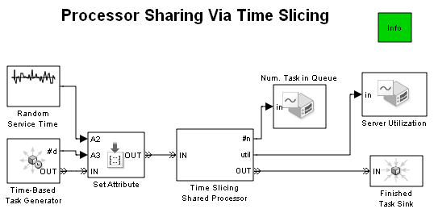
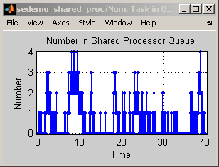
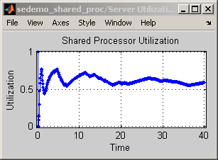
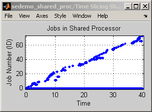
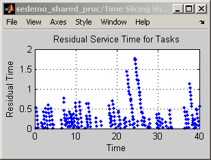

Processor Sharing Via Time Slicing
Contents
Overview
This model illustrates how to model a shared processor that manages multiple tasks by time slicing. The processor swaps among the tasks every 0.1 seconds. As the number of unfinished tasks increases, it takes a given task longer to reach completion because more tasks are sharing the processor.
Time Slicing Shared Processor
The Time Slicing Shared Processor subsystem receives tasks and calculates their effective priority. The effective priority weighting favors shorter older tasks. Tasks wait in a queue until the block labeled CPU Task Delay is available.
In parallel, the block labeled Time Slice Token Generator generates tokens periodically. The tokens, which have high priority, provide a mechanism for interrupting the service on a task so the CPU can switch to a different task. Upon arriving at the block labeled Priority Based Queue1, a token moves to the head of the queue, preempts a task in the block labeled CPU Task Delay, if any, and advances to the block labeled Time Slice Token Sink. No time passes between the generation and destruction of a time slice token.
A task preempted from the block labeled CPU Task Delay departs via the P port and joins the incoming tasks to undergo recalculation of effective priority, queuing, and completion of the next slice of service time.
Results and Displays
The model plots these quantities to help you understand its performance:
- Residual service time, that is, the remaining task execution time for each task after preemption from the processor
- Number of tasks waiting for service
- ID of tasks in the processor, or –1 to indicate that a token arrives at the processor
- Utilization of the processor
To experiment, try changing the value of the Avg Interarrival Time block before running the simulation.
   Experimenting with the Model
You can vary the simulation behavior by making one or more of these changes:
- Change the average task length by changing the Mean parameter in the block labeled Random Service Time.
- Change the distribution of task lengths by changing the Distribution parameter in the block labeled Random Service Time. Select another distribution that yields only nonnegative samples.
- Change the time-slicing interval by changing the Period parameter in the block labeled Time Slice Token Generator in the Time Slicing Shared Processor subsystem.